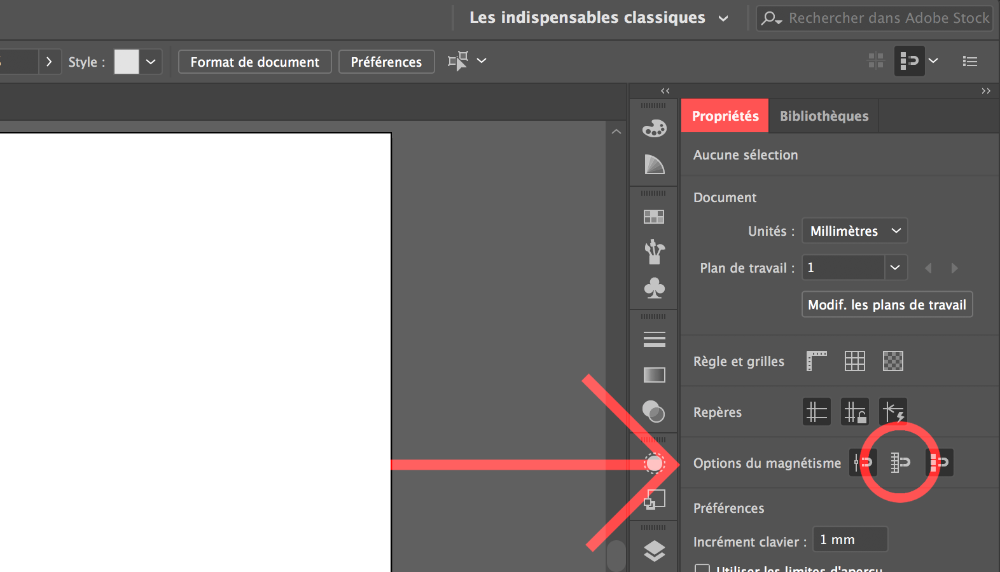
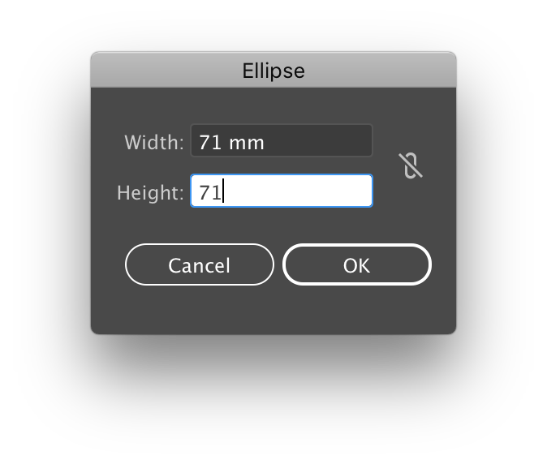
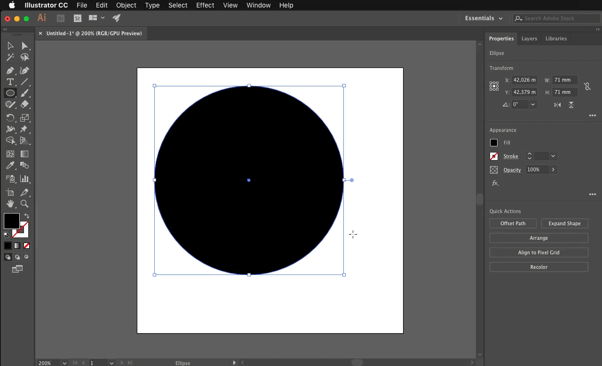
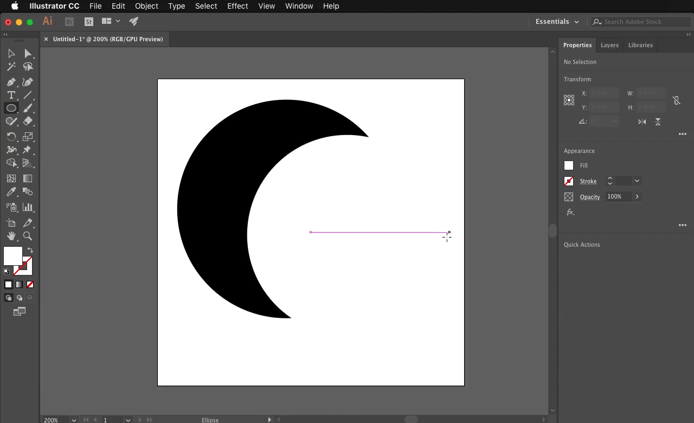
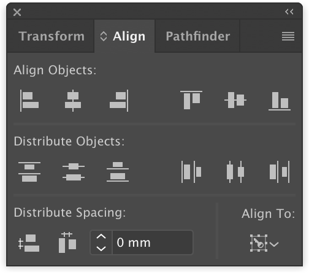
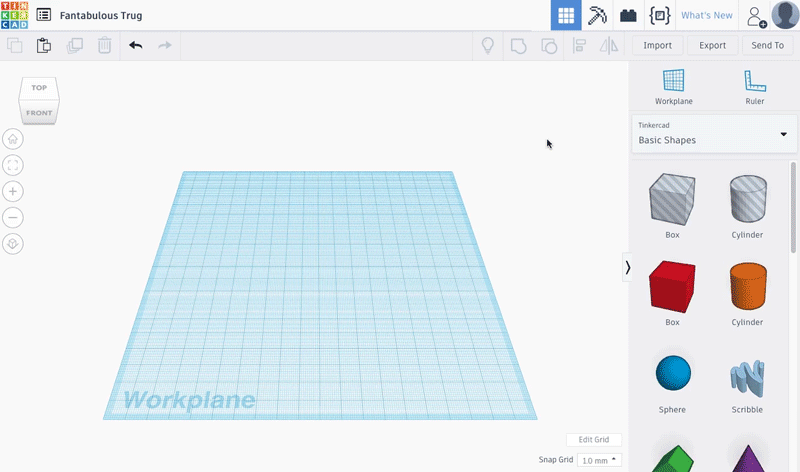
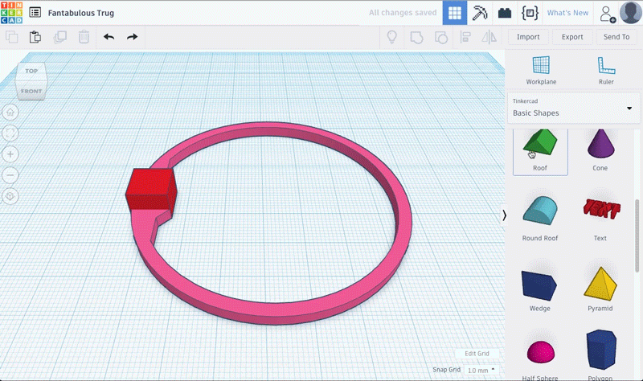
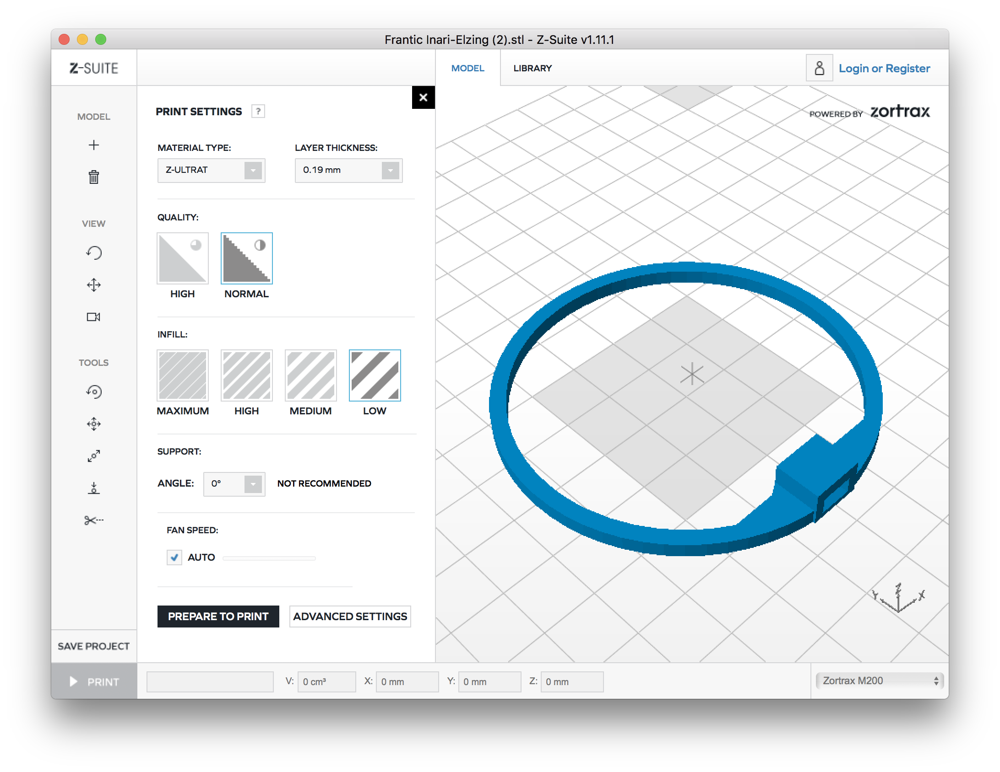

design & 3d print propellers protections
access_time 5 hours
To design the propeller protections, we will use Illustrator (you can download a trial version
here
or use it @ makers' lab) and TinkerCAD.
Next steps will show you how to make a standard propeller protection.
Keep in mind that you have to make a customisation of your drone and not a standard drone :)
1. Illustrator
1.1 Ellipses and Alignment
To begin, create a new document. Check that the units are in Millimeter and give it dimensions of 100 mm wide by 100 mm high.
In "Advanced", choose RGB Color and for "Raster Effects" "High 300 ppi". Click on "Create".
Then, in your document properties (on the top right) verify that the option "Align the new objects on the grid in pixels" is unchecked. 
Select the "Ellipse" tool on the left side panel while holding the mouse button on the "Rectangle" icon. Then in the window that appears, click on Ellipse
(or by pressing the L key on the keyboard)
Make a simple click on the blank page to bring up a dialog box.
Enter the dimensions 71 mm width and 71 mm height.
(The icon to the right of the dimensions boxes allow links the proportions) 
Change the appearance of the circle with the options at the right of the document.
Next to "Ellipse" click on the first box and choose the black square, in the box immediately to the right select the square crossed in red called "None" this allows to obtain a transparent outline.
Using the same method, create another 65 mm by 65 mm circle.
This time change the color of the circle by selecting the square white color, then in the box immediately to the right select the "None" square.
Now click on the "Select" tool in the left side panel to be able to select and manipulate the position of the circles freely. (Or by pressing the V key on the keyboard) 
Display the "Align" panel by selecting from the menu bar at the top of the screen, click on "Window" then on "Alignment" from the drop-down menu. (You can freely manipulate the position of the Alignment panel above your page)
We will now highlight both circles and then in the "Align" panel.
Press the "Horizontal Align Center" button and finally "Vertical Align Center".  The white circle is now in the middle of the black circle.
1.2 Square, Advanced Alignment and Pathfinder
Now add a square of width 7 mm and height 50 mm (color is not important)
Align the square with the "Align" tools at the edge to the right of the black circle.
To perform this action without changing the position of the circles, the additional alignment options must be displayed.
To do this, click on the button at the top right of the alignment tool window 
Choose "Show Options". An additional row of icons is displayed:

Select by holding the left mouse button, only the black circle and the rectangle. Then choose at the bottom right of the Align Panel "Align To:" and click on "Align to Key Object". Highlight the black circle and press the buttons : "Horizontal Align Left" then "Vertical Align Center" in the "Align Objects" category.
We will now use the Pathfinder to subtract the square from the white circle.
The Pathfinder is similar to the "Group" function in Tinkercad as it allows you to perform boolean operator actions.
The Pathfinder is by default right next to "Align" in the Panel.
(If not, display the Pathfinder panel by selecting from the menu bar at the top of the screen, "Window" then "Pathfinder" drop-down menu)
Highlights the circle and rectangle by executing a (⇧ SHIFT + click) and then in the Pathfinder window use the function "Subtraction"
The white circle now has an indentation on the left.
Select the "Polygon Tool" under the "Rectangle icon" and create a 6 sides polygon
In the "Transform" panel, rotate the polygon by 90° then change the W Value to 10 mm and the H value to 20 mm
Now align it to the left center of the white semicircle by using "Align to key object", selecting the white semicircle then click on "Vertical Align Center" and in the bottom box enter "-3mm" and finally click on "Horizontal Distribute Space"
Make sure the semi-white circle and the polygon are highlighted and use the pathfinder to subtract them together. The white semicircle now has a notch on the left.
1.3 Saving
Save the document by selecting in the top menu bar "File" then "Save As ..."
In the dialog box, you can freely name and choose where to save your file.
It will nevertheless be necessary to select the "SVG" type of file from the drop-down menu next to "Format".
Then press OK.
Another dialog box appears, leaving the SVG Profile in SVG 1.1, you do not need to change the other options. Click OK.
2. TinkerCAD
Import your file into Tinkercad using the button at the top right.
In import options, click on "Artboard" then enter 100 mm in Length and 100 mm in Width. 
Change the height of the imported part to 2 mm.
Add a cube 8 mm high, 10 mm depth by 10 mm wide.
Align the 2 pieces on the flat part of the circle with the "Align" tool as seen in the previous tutorial.
Take the roof shape by scrolling down in the right panel rotate it by -90° horizontally and -90° vertically.
Then give him the dimensions : 24 mm Width, 6.50 mm Length and 3.25 mm Heights.
He will now look like a triangle.
(Tip : You can click on the white box with the dimensions inside it to change the numbers with your keyboard) 
Change the accuracy of the grid to 0.5 mm
Select the circle and the red box and group them together.
Give it an incline of 8º to the outside and raise the triangle by 1.50 mm.
(To be able to modify the inclination degree by degree, after clicking on the double arrow, you must keep the left click of the mouse pressed above the blue wheel above.)
Align the circle and the triangle to the left and to the center.
Then, move the triangle to the left of 1.1 mm (Tip : Keep the shift key down during the translation)

Select all the parts and group them together.
Before exporting and printing it, you have to customize your propellers. You can see an example in the assembly part below. Be creative ! Export the shape by selecting "Export" then STL to be able to 3D print it !
Now you are ready to 3D Print your part 4 times!
Tip : Choose different filament color to differentiate the rear and the front of your drone.
 Optimal Settings for reference :
- "Z-ULTRA" material - Layer thickness : "0.19 mm"
- Quality : "NORMAL"
- Infill : "LOW"
- Support : ANGLE "0°" (no support)